Machine Learning and Neural Networks
Roberto Santana and Unai Garciarena
roberto.santana@ehu.es
Department of Computer Science and Artificial Intelligence
University of the Basque Country
Recurrent Neural Networks: Table of Contents
-
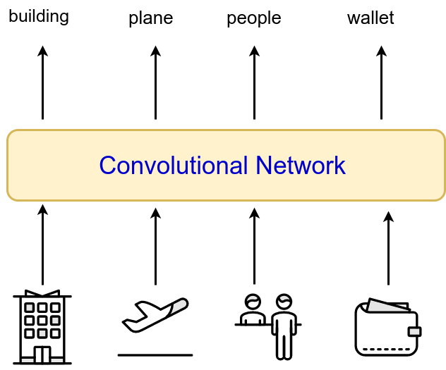
- Convolutional networks we have seen receive a single input (e.g., each image) and produce a single output.
Recurrent Neural Networks
-
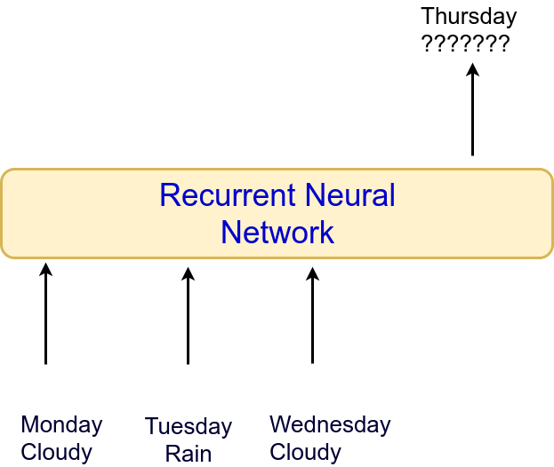
- For some problems, sequential information is available,i.e., several inputs from which a single output has to be produced a single output (e.g., weather forecast).
- Problem: Weather forecast.
Recurrent Neural Networks
- Problem: Time series prediction.

Recurrent Neural Networks
-
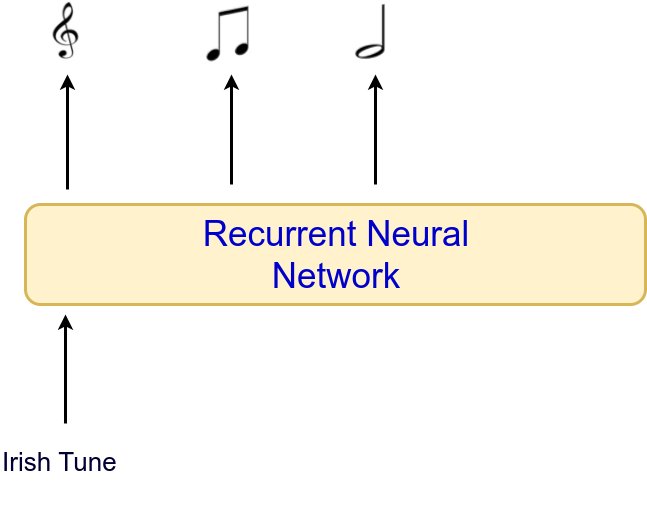
- In other problems, a single input is avalaible and an output that is itself a sequence is needed.
- Problem: Music generation according to genre.
Recurrent Neural Networks
-
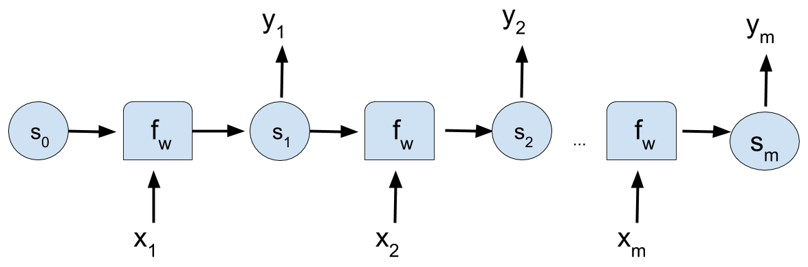
- RNNs can also receive a single input (e.g., each image) and produce a single output.
Recurrent Neural Networks
Network architecture

Characteristics
- RNNs are a family of NNs for processing sequential data.
- An internal state that serves as a memory of what the network has seen in the past.
- An RNN shares the same weights accross several time steps .
- Regardless of the sequence length, the learned model has the same input size.
- It is possible to use the same transition function \(f\) with the same parameters at ever time \(t\).
I. Goodfellow and Y. Bengio and A. Courville. Deep Learning. Chapter 10. Sequence Modeling: Recurrent and Recursive Nets. MIT Press. 2016.
A. Geron. Hands-On Machine Learning with Scikit-Learn and TensorFlow. Concepts, Tools, and Techniques to Build Intelligent Systems. O'Reilly. 2017.
A. Graves. Supervised sequence labelling with recurrent neural networks. Vol. 385. Heidelberg: Springer. 2012.
Recurrent Neural Networks
Network architecture
Applications
- They allow to implement very flexible architecture designs.
- Can process sequences of variable length.
- Stock market price predictions
- Speech recognition
- Predicting trajectories
I. Goodfellow and Y. Bengio and A. Courville. Deep Learning. Chapter 10. Sequence Modeling: Recurrent and Recursive Nets. MIT Press. 2016.
A. Geron. Hands-On Machine Learning with Scikit-Learn and TensorFlow. Concepts, Tools, and Techniques to Build Intelligent Systems. O'Reilly. 2017.
A. Graves. Supervised sequence labelling with recurrent neural networks. Vol. 385. Heidelberg: Springer. 2012.
Recurrent Neural Networks
Structure
-
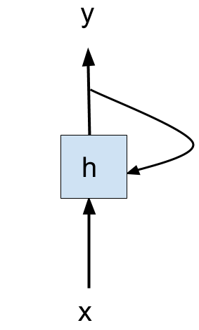
Simple recurrent neuron
- A recurrent neural network looks similar to a feedforward network except it also has connections pointing backwards.
- A simple recurrent neuron has the following components:
- An input.
- A single neuron that processes the output.
- One output connection.
- One connection that sends the output back to the neuron.
A. Geron. Hands-On Machine Learning with Scikit-Learn and TensorFlow. Concepts, Tools, and Techniques to Build Intelligent Systems. O'Reilly. 2017.
Simple Recurrent Neurons
Memory cells
Recurrent neuron as memory cell
- A part of a neural network that preserves some state accross time steps is called a memory cell.
- The hidden state serves as a kind of lossy summary of the task-relevant aspects of the past sequence of inputs up to the current state.
- A single recurrent neuron, or a layer of recurrent neurons, is a basic cell or simply a cell.
A. Geron. Hands-On Machine Learning with Scikit-Learn and TensorFlow. Concepts, Tools, and Techniques to Build Intelligent Systems. O'Reilly. 2017.
Recurrent Neural Networks
Unrolling the neuron through time
-
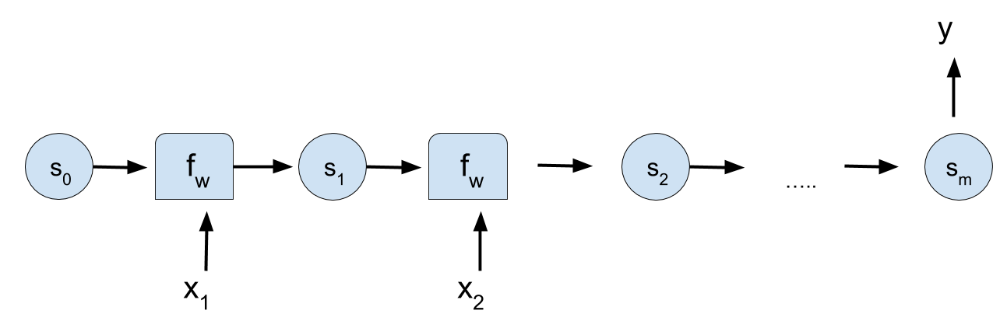
- The state of a (hidden) cell at time \(t\) is represented as \( {\bf{s}}_t \).
Simple recurrent neuron
- It is possible "unroll" the recurrent neuron to represent the input and output at every time \(t\).
- It is always the same neuron!!! Only the representation changes.
A. Geron. Hands-On Machine Learning with Scikit-Learn and TensorFlow. Concepts, Tools, and Techniques to Build Intelligent Systems. O'Reilly. 2017.
Recurrent Neuron Computation
- \( {\bf{x}}_{(t)}\): Input.
- \( {\bf{s}}_{(t-1)}, {\bf{s}}_{(t)}\): States at times \(t-1 \) and \( t \).
- \( f_W \): Current state of the neuron depends on the previous state and the input through a function parameterized by \( W \) .
\[ {\bf{s}}_{(t)} = f_W \left ( {\bf{s}}_{(t-1)}, {\bf{x}}_{(t)} \right) \]
Simple Recurrent Neurons
Memory cells
- The cell output is also a function of the current inputs and the previous state.
- For simple cells the output is equal to cell's state.
- For more complex cells the output of the cell and the cell's state do not coincide.
Recurrent neuron as memory cell
- \( {\bf{x}}_{(t)}\): Input.
- \( {\bf{s}}_{(t-1)}, {\bf{s}}_{(t)}\): States at times \(t-1 \) and \( t \).
- \( f_W \): Current state of the neuron depends on the previous state and the input through a function parameterized by \( W \) .
\[ {\bf{s}}_{(t)} = f_W \left ( {\bf{s}}_{(t-1)}, {\bf{x}}_{(t)} \right) \]
A. Geron. Hands-On Machine Learning with Scikit-Learn and TensorFlow. Concepts, Tools, and Techniques to Build Intelligent Systems. O'Reilly. 2017.
Recurrent Neuron Computation
- \( {\bf{x}}_{(t)}\): Input.
- \( {\bf{s}}_{(t-1)}, {\bf{s}}_{(t)}\): States at times \(t-1 \) and \( t \).
- \({\bf{W}}_{s,s}\),\({\bf{W}}_{x,s}\), \({\bf{w}}_{s,y}\): Weights for the state, the input, and the output, respectively.
- \(\phi() \): Activation function.
\[
{\bf{s}}_{(t)} = \phi \left ( W_{s,s} \, {\bf{s}}_{(t-1)}
+ W_{x,s} \, {\bf{x}}_{(t)} \right)
\]
\[
{\bf{y}}_{(t)} = {\bf{s}}_{(t)} W_{s,y}
\]
Recurrent Neuron Computation
- \({\bf{W}}_{s,s}\),\({\bf{W}}_{x,s}\), \({\bf{w}}_{s,y}\) are shared along all time steps .
- Some simple RNN cells do not use \( W_{s,y} \) and assume that \( {\bf{y}}_{(t)} = {\bf{s}}_{(t)} \)
\[
{\bf{s}}_{(t)} = \phi \left ( W_{s,s} \, {\bf{s}}_{(t-1)}
+ W_{x,s} \, {\bf{x}}_{(t)} \right)
\]
\[
{\bf{y}}_{(t)} = {\bf{s}}_{(t)} W_{s,y}
\]
RNN problem
-
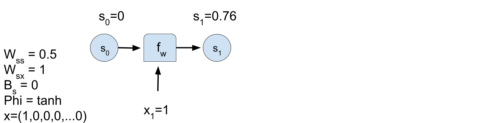
- \(t=1: \; \; \; {\bf{s}}_{(t)} = \phi \left ( W_{s,s} \, {\bf{s}}_{(t-1)} + W_{x,s} \, {\bf{x}}_{(t)} \right) \) .
RNN problem
-
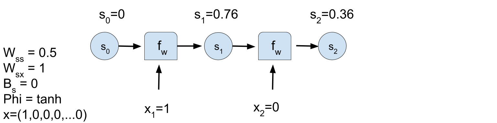
- \(t=2: \; \; \; {\bf{s}}_{(t)} = \phi \left ( W_{s,s} \, {\bf{s}}_{(t-1)} + W_{x,s} \, {\bf{x}}_{(t)} \right) \) .
RNN problem
-
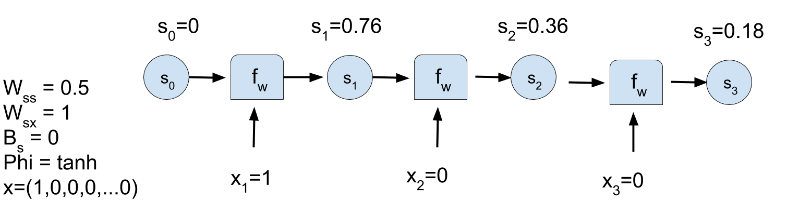
- \(t=3: \; \; \; {\bf{s}}_{(t)} = \phi \left ( W_{s,s} \, {\bf{s}}_{(t-1)} + W_{x,s} \, {\bf{x}}_{(t)} \right) \) .
RNN problem
-
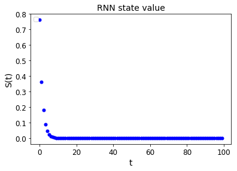
Back propagation through time
- First, the RNN is unrolled through time.
- Regular backpropagation can be applied. This strategy is called backpropagation through time (BPTT).
Back propagation through time
BPTT
- A forward pass through the unrolled network.
- The output sequence is evaluated using a cost function \(L \left ({\bf{Y}}_{(t_{min})},{\bf{Y}}_{(t_{min}+1)},\dots,{\bf{Y}}_{(t_{max})} \right) \), where \(t_{min}\) and \(t_{max}\) are the first and last ouput time steps.
- The gradients of the loss function are propagated backward through the unrolled network.
- The model parameters are updated using the gradients.
- Loss functions depend on the different RNN architectures.
RNN Variants
- Produce an output at each time step and have recurrent connections between hidden units.
- Produce an output at each time step and have recurrent connections only from the output at one time step to the hidden units at the next time step.
- Recurrent connections between hidden units, that read an entire sequence and then produce a single output.
One input to one output
- Example of application: Next character prediction.
Recurrent connections between hidden neurons
-
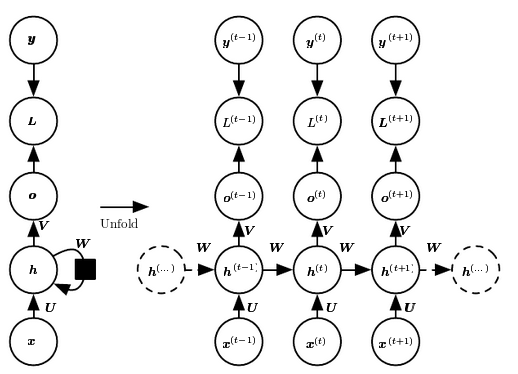
Connection between hidden neurons
\begin{align} {\bf{a}}^{(t)} &= {\bf{b}} + {\bf{W}}{\bf{h}}^{(t-1)} + {\bf{U}}{\bf{x}}^{(t)} \\ {\bf{h}}^{(t)} &= tanh({\bf{a}}^{(t)}) \\ {\bf{o}}^{(t)} &= {\bf{c}} + {\bf{V}}{\bf{h}}^{(t)} \\ \hat{{\bf{y}}}^{(t)} &= softmax ({\bf{o}}^{(t)}) \end{align}Connection between hidden neurons
Loss function
\begin{align} & \mathcal{L} (\{ {\bf{x}}^{(1)},\dots,{\bf{x}}^{(\tau)}\},\{{\bf{y}}^{(1)},\dots,{\bf{y}}^{(\tau)} \} \\ =& \sum_t \mathcal{L}^{(t)} \\ =& \sum_t \log p_{rnn} \left( {\bf{y}}^{(t)} \mid \{{\bf{x}}^{(1)},\dots,{\bf{x}}^{(\tau)} \} \right) \end{align}Connection from output to hidden neurons
-
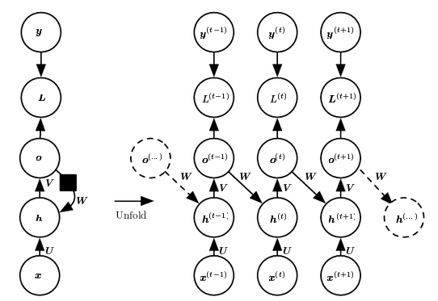
Many inputs to only one output
-
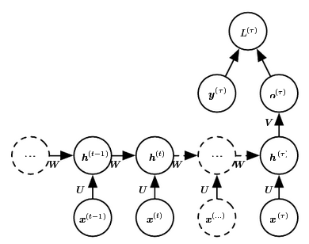
Many inputs to only one output
- Example of application: Time Series Classification.
Recurrent Layers
Characteristics
- A layer of recurrent functions is formed by joining \(n_{neurons} \;\) recurrent neurons.
- The neurons that multiply the input features by the weight matrix, as usual, and apply the activation function afterwards.
- All neurons in the layer will receive as input the original input \(x_t\) plus the concatenation of the outputs of the neurons in the previous layer.
Recurrent Layer
-
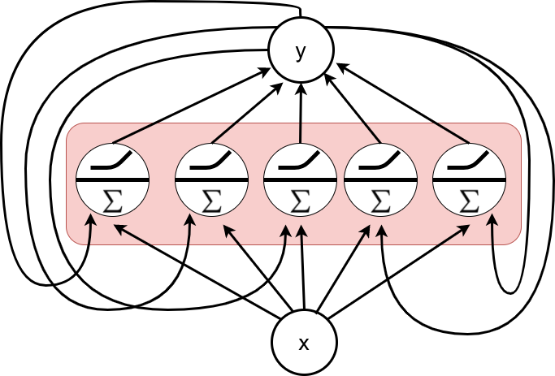
Recurrent layers
Output recurrent layer
- \[ \begin{align} {\bf{S}}_{(t)} &= \phi \left( {\bf{X}}_{(t)} \cdot {\bf{W}}_{(x,s)} + {\bf{S}}_{(t-1)} \cdot {\bf{W}}_{(s,s)} + {\bf{b}}_s \right) \end{align} \]
- \( {\bf{S}}_{(t)} \): is an \( m \times n_{neurons} \; \) matrix where \(m\) is the size of the minibatch and \(n_{neurons} \; \) is the number of neurons in the layer.
- \( {\bf{X}}_{(t)} \): is an \( m \times n_{inputs} \) matrix where \(n_{inputs}\) is the number of input features.
- \( {\bf{W}}_{(x,t)} \): is an \(n_{inputs} \times n_{neurons} \; \) with the weights for the input features for the current time step.
- \( {\bf{W}}_{(s,s)} \): is an \(n_{neurons} \times n_{neurons} \; \) with the connection weights between the neurons in the previous and current time steps.
Recurrent Layer
A. Geron. Hands-On Machine Learning with Scikit-Learn and TensorFlow. Concepts, Tools, and Techniques to Build Intelligent Systems. O'Reilly. 2017.
Deep RNNs
Variants
-
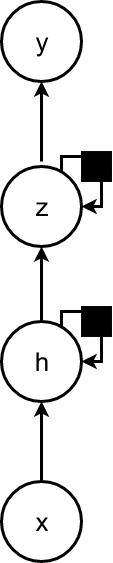
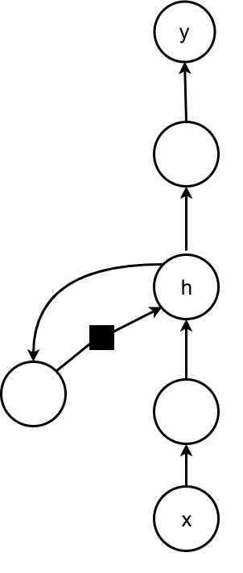
Deep learning with RNNs
- A recurrent neural network can be made deep in many ways.
- Adding depthness from the input to the hidden state.
- From the previous hidden state to the next hidden state.
- From the hidden state to the output.
- Depthness can increase the capacity of the model needed in these different parts.
Deep RNNs
Variants
Deep learning with RNNs
- The hidden recurrent state can be broken down into groups organized hierarchically.
- Deeper computation (e.g., an MLP) can be introduced in the input-to-hidden, hidden-to-hidden, and hidden-to-ouput parts.
- Significant benefit can be obtained from decomposing the state of an RNN into multiple ways.
- Adding depth may hurt learning by making optimization difficult.
RNNs with context information
Context at each step
-
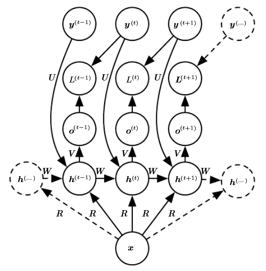
Ways of adding context
- A single vector \(x\) can be used as input context to condition sequence prediction.
- Can be added as an extra input at each time step or;
- As the initial state \(h^{(0)}\).
- Or be used as both of these previous possibilities.
- Context is used for tasks such as image captioning.
Encoder-Decoder
Encoder-decoder network
-
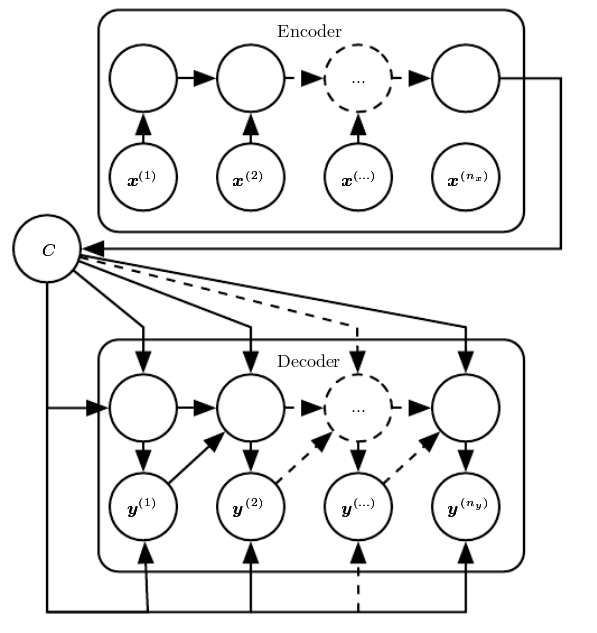
Characteristics
- Similar to the sequence model.
- It has an initial encoding stage with no output signal to predict.
- In the encoding stage, the input sequence is consumed to produce a hidden state.
- It the decoding stage, an output signal is produced, one timestep at a time, conditioned on the hidden state from the encoding stage .
RNNs. Sequence to sequence (encoder-decoder) models
-
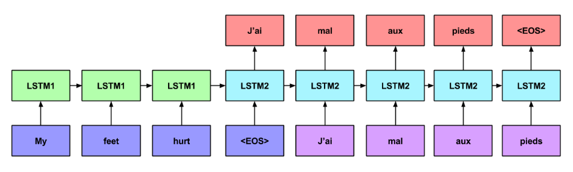
- Example of application: Text transcription.
Bidirectional RNN
Bidirectional network
-
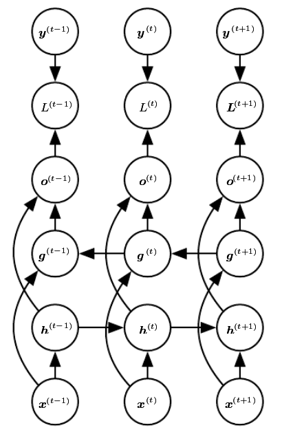
Characteristics
- Two layers of hidden nodes are connected to input and output.
- The first has recurrent connections from the last time.
- The second has recurrent connections from the future.
- It requires a fixed point in the future and the past.
Long term dependencies
The challenge
- Gradients propagated over many stages tend to either vanish or (rarely) to explode.
- Exponentially smaller weights are given to long-term interactions compared to short-term ones.
- It does not mean that long-term interactions are impossible to learn but it may take a long time.
- The signal about long-term dependencies will tend to be hidden by smallest fluctuationss aringing from short-term dependencies.
Long term dependencies
Particular characteristics
- A simplified recurrence relationship in RNNs: \[ {\bf{h}}^{(t)} = {\bf{W}}^{\top}{\bf{h}}^{(t-1)} \]
- It essencially describes the power method \[ {\bf{h}}^{(t)} = ({\bf{W}}^t)^{\top} {\bf{h}}^{(0)} \]
- which can be further simplified if W admits an eigendecomposition: \[ {\bf{h}}^{(t)} = {\bf{Q}}^{\top} {\bf{\Lambda}}^t {\bf{Q}} {\bf{h}}^{(0)} \]
- When raised to the power of $t$ eigenvalues with magnitude less than one will decay to zero and eigenvalues of \( {\bf{\Lambda}}\) with magnitude greater than one to explode.
Long term dependencies
Goal
- Goal: Design a model that operates at multiple time scales. Some parts of the model operate at fine-grained time scales and can handle small details, while other parts operate at coarse time scales.
The alternative solutions
- Adding skip connections through time: Add direct connections from variables in the distant past to variables in the present.
- Leaky units: A hidden unit with a linear self-connection with a weight near one on these connection.
- Removing connections:Actively removing length-one connections and replacing them with longer connections.
- Gated RNNs:Creating paths through time that have derivatives that neither vanish nor explode.
Long Short Term Memory Networks (LSTMs)
Network architecture
-
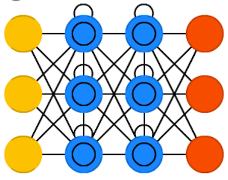
Characteristics
- It addresses the limitations of simple recurrent cells to represent long term dependencies in the data.
- It can be used as a simple cell.
- The key idea is that the network can learn what to store in the long-term state, what to throw away, and what to read from it.
- Training will converge faster for LSTMs.
- Several LSTM variants have been proposed.
S. Hochreiter and J. Schmidhuber. Long short-term memory. Neural computation. Vol. 9. No. 8. Pp. 1735-1780. 1997.
A. Geron. Hands-On Machine Learning with Scikit-Learn and TensorFlow. Concepts, Tools, and Techniques to Build Intelligent Systems. O'Reilly. 2017.
LSTMs
- Two (vector) representations of the cell state: The short term state \( {\bf{h}}_{(t)} \) and the long term state \( {\bf{C}}_{(t)} \)
- \( \sigma \) is the sigmoid function that operates as a gate.
- \( \otimes \) means dot product.

LSTMs
- The cell receives the short-term and long-term states from the previous time \((t-1)\) and the input from the current time \(t\).
- Within the cell, transformations to the vectors are made using gates that represent vector computations.
LSTMs
- The objective of applying these vector operations is to remove or add information to the cell state.
- Gates use the sigmoid function that ouputs a number between zero and one, meaning how much of each component should be let through.
LSTMs
Network architecture
Components
- The forget gate \(f_{(t)} \) processes \( {\bf{h}}_{(t-1)} \) and \( {\bf{x}}_{(t)} \) to decide, from each variable, which information will be "forgotten" or "used" by the cell:
\[ f_t = \sigma \left ( {\bf{W}}_{f} [{\bf{h}}_{(t-1)}, {\bf{x}}_{(t)}] + b_f \right ) \]
Figure. By Trun Tran. Creating A Text Generator Using Recurrent Neural Network. Accessed 2017.
C. Olah. Understanding LSTM Networks. Accessed 2017.
LSTMs
Network architecture
Components
- The long term state candidate , \( {\bf{\tilde{C}}}_{(t)} \), is created by applying a tanh operator to the concatenation of the short term state and the input.:
\[ \begin{align} {\bf{\tilde{C}}}_{(t)} &= tahn \left ( {\bf{W}}_{C} [{\bf{h}}_{(t-1)}, {\bf{x}}_{(t)}] + b_C \right ) \end{align} \] - The input gate \(i_{(t)} \) decides which values from \( {\bf{h}}_{(t-1)} \) and \( {\bf{x}}_{(t)} \) will be used to update \( {\bf{C}}_{(t)} \):
\[ \begin{align} i_t &= \sigma \left ( {\bf{W}}_{i} [{\bf{h}}_{(t-1)}, {\bf{x}}_{(t)}] + b_i \right ) \\ \end{align} \]
LSTMs
Network architecture
Components
- The long term state value \( {\bf{C}}_{(t)} \) is created as the sum of two terms. The product between the input gate and the long term state candidate, \( {\bf{\tilde{C}}}_{(t)} \); and the product between the forget gate and the previous short term state:
\[ {\bf{C}}_{(t)} = i_t \cdot {\bf{\tilde{C}}}_{(t-1)} + f_t \cdot {\bf{C}}_{(t-1)} \]
LSTMs
Network architecture
Components
- The output gate \(i_{(t)} \) controls which parts of the short-term state should be read and output (both to \( {\bf{y}}_{(t)} \) ) and \( {\bf{h}}_{(t)} \):
\[ \begin{align} o_t &= \sigma \left ( {\bf{W}}_{o} [{\bf{h}}_{(t-1)}, {\bf{x}}_{(t)}] + b_o \right ) \\ \end{align} \] - The short-term state is the product between the output gate and a tanh operation on the long-term state:
\[ \begin{align} {\bf{h}}_{(t)} &= o_t \cdot tahn({\bf{C}}_{(t)}) \end{align} \]
LSTMs: Summary
- The long term state value \( {\bf{C}}_{(t)} \) is created as the sum of two terms. The product between the input gate and the long term state candidate, \( {\bf{\tilde{C}}}_{(t)} \); and the product between the forget gate and the previous short term state:
\[ {\bf{C}}_{(t)} = i_t \cdot {\bf{\tilde{C}}}_{(t-1)} + f_t \cdot {\bf{C}}_{(t-1)} \] - The output gate \(i_{(t)} \) controls which parts of the short-term state should be read and output (both to \( {\bf{y}}_{(t)} \) ) and \( {\bf{h}}_{(t)} \):
\[ \begin{align} o_t &= \sigma \left ( {\bf{W}}_{o} [{\bf{h}}_{(t-1)}, {\bf{x}}_{(t)}] + b_o \right ) \\ \end{align} \] - The short-term state is the product between the output gate and a tanh operation on the long-term state:
\[ \begin{align} {\bf{h}}_{(t)} &= o_t \cdot tahn({\bf{C}}_{(t)}) \end{align} \]
- The forget gate \(f_{(t)} \) processes \( {\bf{h}}_{(t-1)} \) and \( {\bf{x}}_{(t)} \) to decide, from each variable, which information will be "forgotten" or "used" by the cell:
\[ f_t = \sigma \left ( {\bf{W}}_{f} [{\bf{h}}_{(t-1)}, {\bf{x}}_{(t)}] + b_f \right ) \] - The long term state candidate , \( {\bf{\tilde{C}}}_{(t)} \), is created by applying a tanh operator to the concatenation of the short term state and the input:
\[ \begin{align} {\bf{\tilde{C}}}_{(t)} &= tahn \left ( {\bf{W}}_{C} [{\bf{h}}_{(t-1)}, {\bf{x}}_{(t)}] + b_C \right ) \end{align} \] - The input gate \(i_{(t)} \) decides which values from \( {\bf{h}}_{(t-1)} \) and \( {\bf{x}}_{(t)} \) will be used to update \( {\bf{C}}_{(t)} \):
\[ \begin{align} i_t &= \sigma \left ( {\bf{W}}_{i} [{\bf{h}}_{(t-1)}, {\bf{x}}_{(t)}] + b_i \right ) \\ \end{align} \]
Gated Recurrent Units (GRUs)
Network architecture
-
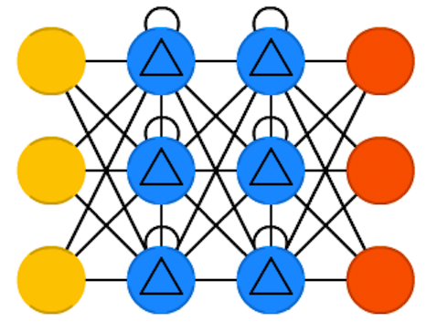
Characteristics
- GRU is a simplified version of LSTM with a similar performance.
- Both state vectors are merged into a single output vector \( {\bf{h}}_{(t)} \) .
- A single update gate controller \(z\) controls both the forget state and the input state.
- If the update gate controller outputs a 1, the input gate is open and the forget gate is closed. If it outputs 0, the opposite happens.
- There is not output gate; the full state vector is output at every time step.
K. Cho et al. Learning phrase representations using RNN encoder-decoder for statistical machine translation. ArXiv preprint arXiv:1406.1078. 2014.
A. Geron. Hands-On Machine Learning with Scikit-Learn and TensorFlow. Concepts, Tools, and Techniques to Build Intelligent Systems. O'Reilly. 2017.
Gated Recurrent Units (GRUs)

C. Olah. Understanding LSTM Networks. Accessed 2017.